Categories: blogs Tags: Golang Optimisation Profilers Assembly
Download PDF
Hey guys, how you guys doing? Since a few days some people asked me what I usually do at work. My answers usually caters differently as the population pool contains juniors, colleagues, seniors, whamens i need to rizz, parents and relatives, etc. \
So I decided, why not write a small write-up for it. At the same time one of my juniors asked me to give a talk on it to a community he is a part of so was like, why not (this took the whole Saturday and Sunday to compile 😭).
Also disclaimer, there are hundreds of places where there are different tricks to optimise so we aren’t going to talk about all of that here. Also this blog should be paired with a good understanding of golang, it would really help but that’s the scope of another blog.
This write up will consist of some theory and more examples. We will talk about tools, tricks, ways to write better code. Additionally, will be adding a GitHub repo at the end so as to refer to the examples and test and verify by your own. We will be analyzing our code and trying to make it better step by step. Finding problems would be the first and then trying to solve them.
First of all let’s get into it. Why do we need to optimise our code? What’s the reason? Why is your manager saying to make it as low latency as possible?
Here comes the word latency. So what is latency? Ask IBM and they will tell it’s the delay in a system. And that’s true. Let’s say I want some order to execute, due to things being over the network, I/O, heap allocations, etc. I can’t get it done on the spot, it will take some time to reach some co-located server and execute stuff there.
So what causes this latency at all? Why is it there? Let’s rule out things we don’t have in hand and focus on programs coz we only control programs 😭 (I hope you guys write code by your hand)
Things that bug us:
So what do we want from our programs really? Reduce overhead of I/O operations, reduce heap allocations, lower down GC pressure, etc.
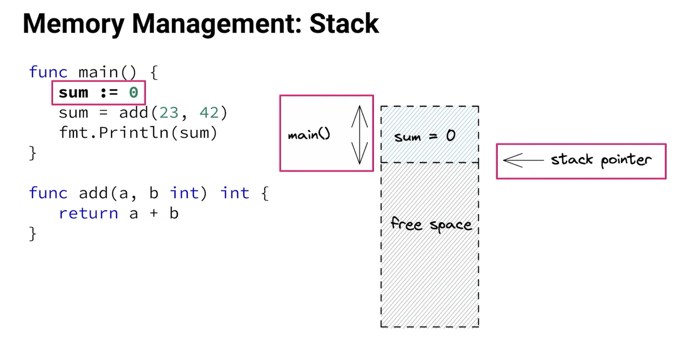
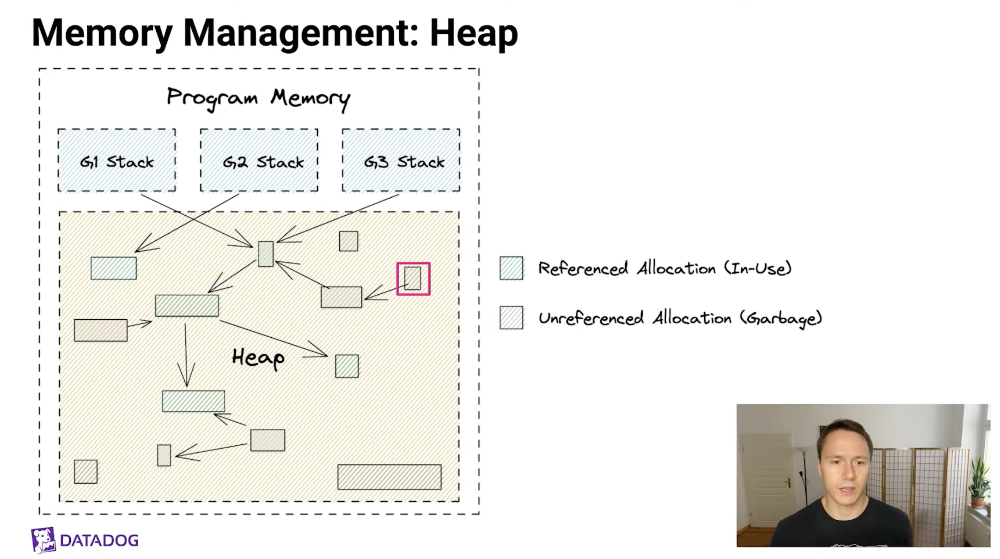
SO essentially when we run a golang project, we allocate sum memory, compute something and output something. Where does all that happen ? Lets take a look at it.
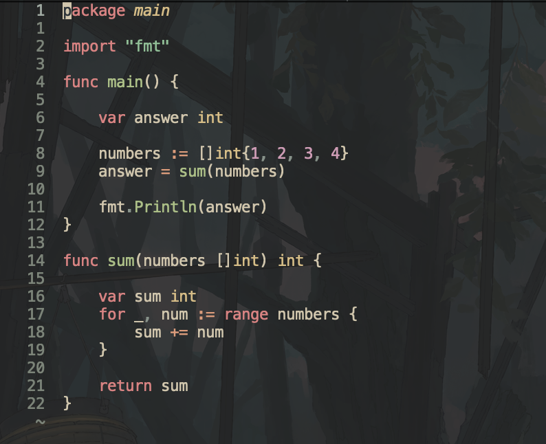
This is a simple golang program, it makes a slice, sends it to compute something and gets back the answer. Pretty cool right. Now lets read how the whole program flows. For this we will use a golang gui to read assembly called lensm
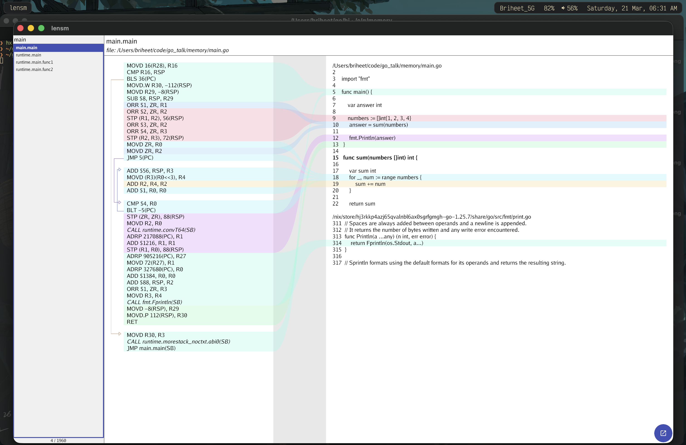
As you can see our program does a lot of things. Let me take you line by line on what it is doing and at the end i will explain you the wholesome way on why something. Also make sure i am building and objdumping on apple silicon hence these are arm stuff.
MOVD 16(R28), R16 // ldr x16, [x28,#16]
MOVD is a Go assembler pseudo-instruction. The core ARM64 MOV instructions from the manual are these.
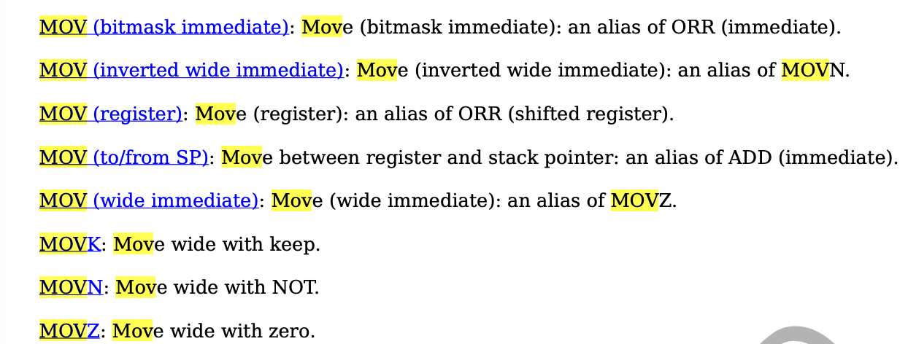
So what golang does is that it implements a bunch of things different from the main instructions.
If you have seen the talk by Rob Pike on how they moved to Go packages for linking stuff, you will get why golang does this. This also helps in supporting various different machines and keeping it portable. This design helps keep the assembler simple, and along with other reasons, Go tends to compile fast. Here is the link to the talk if you’re interested. Design of the golang assmebler
So you can go to the official package docs: Official package
Golang implements MOV in variants. 64-bit variant ldr, str, stur => MOVD; 32-bit variant str, stur, ldrsw => MOVW; 32-bit variant ldr => MOVWU; ldrb => MOVBU; ldrh => MOVHU; ldrsb, sturb, strb => MOVB; ldrsh, sturh, strh => MOVH. \
So as we are on a 64 bit arm machine, our golang program uses MOVD to load and store. So now you can map
; 64-bit variant ldr, str, stur => MOVD; MOVD 16(R28), R16 // ldr x16, [x28,#16]
It goes to function asmout to this switch
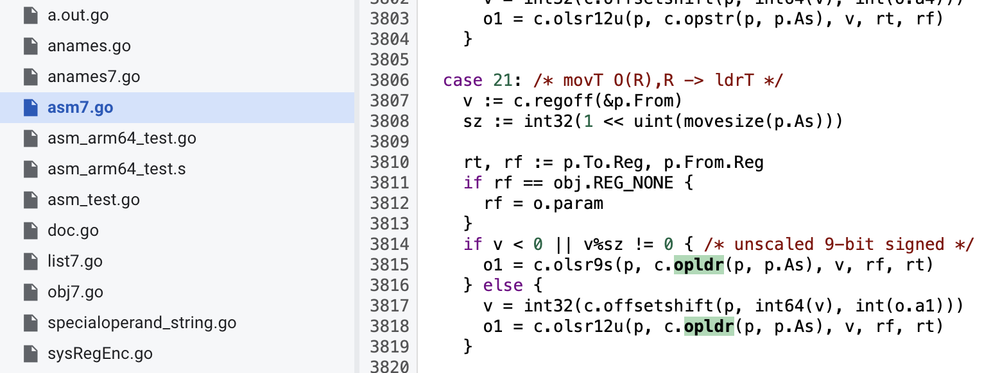
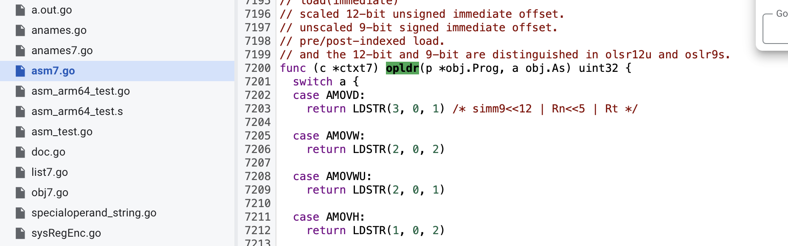
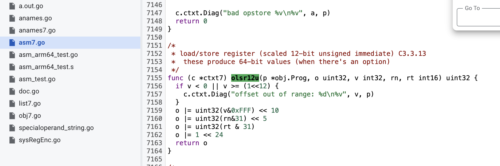
So now you would ask why R28 briheet? If you read the golang assembler manual, you’ll see it is reserved by the compiler and linker. If you read the Go ABI, R28 is the current goroutine pointer.
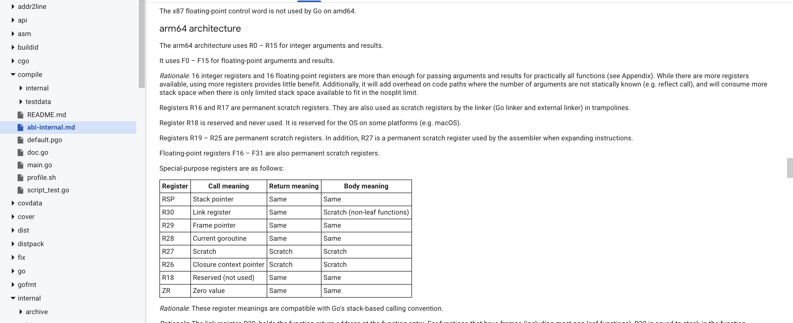
So to summarize, the operation listed below
MOVD 16(R28), R16 // ldr x16, [x28,#16] CMP R16, RSP // cmp sp, x16 BLS 36(PC) // b.ls .+0x90
means that the current main function starts as a goroutine (check R28 is the current goroutine) and during the start it loads g.stackguard0 into R16 (see the Go ABI pic above). Then we use CMP to compare that stack guard limit with RSP (stack pointer) to see if the stack is safe or if we need to grow it. That’s why you will see there is a branch coming out of BLS below, it calls runtime.morestack_noctxt.abi0(SB) and then jumps back to main.main.
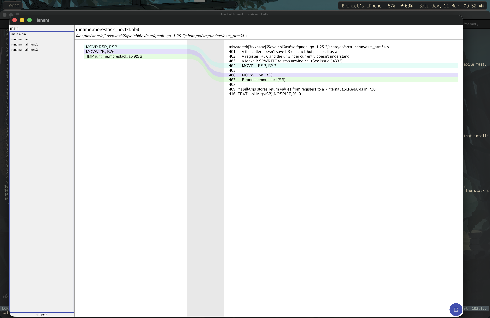
So the flow is:
As I said, R28 is the current goroutine in the Go ABI screenshot. So how does a goroutine look like or laid out that 16 offset on R28 (current goroutine) gives us the stack guard value? Here is the runtime stack layout in golang.
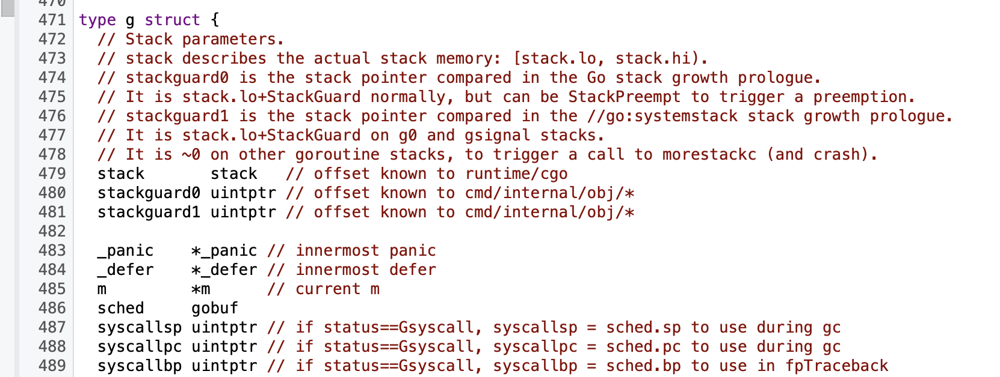
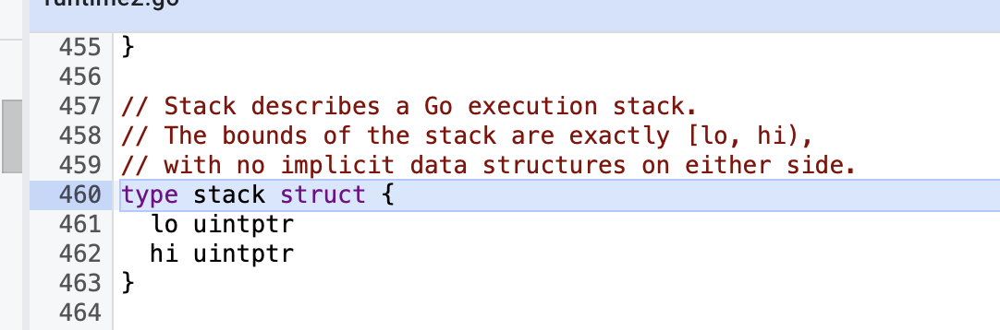
So if you go down with +0, +8 and then +16, wait, there you have +16 on current goroutine (R28) gives you stackguard0.
Hence i think now you can finally understand how instructions are laid out, Go ABI’s, offset, asmout, linking, checks at compile time for runtime, program start and more. This is the 1% you need to know to understand the real depths of performance. Also for now i am gonna skip explaining all instructions and just write basic stuff as you can figure that out the way i have explained above, or else you should leave programming. jk ill add them in future.
MOVD.W R30, -112(RSP) // str x30, [sp,#-112]! MOVD R29, -8(RSP) // stur x29, [sp,#-8] SUB $8, RSP, R29 // sub x29, sp, #0x8
now we have these calls, but what does it mean. We can now read the abi and know that R30 is Link Register/Return address and RSP is Register stack pointer, but what is -112 and why ? Lets look at the stack frame.
ORR $1, ZR, R1 // orr x1, xzr, #0x1 ORR $2, ZR, R2 // orr x2, xzr, #0x2 STP (R1, R2), 56(RSP) // stp x1, x2, [sp,#56] ORR $3, ZR, R2 // orr x2, xzr, #0x3 ORR $4, ZR, R3 // orr x3, xzr, #0x4 STP (R2, R3), 72(RSP) // stp x2, x3, [sp,#72]
AS we can see that this is our slice building. ORR is a bitwise or operation. On arm64, it helps in loading in Register R1 as bitwise OR with zero is the same number (A OR 0 = A). Its the golang assembler choosing to move If i am not wrong MOV is also goes to ORR or ADD on arm. I am not a assembly programmer so no idea.
So essentailly it takes 1 and second immdeiate values and moves both R1 and R2 in stack frame at 56 + register stack pointer. Then it does the same for next 2 values for moving them into 72 + register stack pointer. So here we can see that 56 + 8 => 64, 64 + 8 => 72, 72 + 8 => 80, 80 + 8 => 88 So thats 88 - 56 = 32; (4 * 8)
Hence we can see that the numbers live at stack frame and according to bytes and we know there starting. \
Now we can see that our slice data occupies offsets 56–88 in the stack frame (32 bytes for 4 int64s). Now lets go ahead.
+Now let’s look at the loop that sums the slice. This is the inlined sum:
sum
MOVD ZR, R0 ;R0 = 0 (i = 0) MOVD ZR, R2 ;R2 = 0 (sum = 0) JMP 5(PC) ;jump to loop to check the condition ADD $56, RSP, R3 ;R3 = SP + 56 (base address of the slice backing array) MOVD (R3)(R0<<3), R4 ;R4 = *(R3 + R0*8) (load element i) ADD R2, R4, R2 ;sum += element ADD $1, R0, R0 ;i++ CMP $4, R0 ;compare i with 4 (len) BLT -5(PC) ;if i < 4, jump back to loop body
So in Go ways, its:
sum := 0 for i := 0; i < 4; i++ { sum += numbers[i] }
Why the jump before the loop body? It’s a common pattern: initialize i and sum, then jump to the condition check, then loop back into the body if i < 4. This prevents executing the body once before the first check.
i
i < 4
Why R0<<3? Each int is 8 bytes on 64‑bit, so index * 8 gives the byte offset. ABI reference
R0<<3
int
index * 8
Cool, I hope everything is fine till here. I hope you guys understand :), I can just hope.
So now here comes the most weird part. If you are into systems and have written C++ or Rust code, or even seen the Datadog slide screenshot above, you would be knowing that heap escapes are the worst. The compiler has to fetch it first and the whole flow takes time. So when optimising the code we usually keep functions small and inlined (keep functions under cost 80) and reduce escapes to heap. \
But check this out, a normal fmt.Println call does a call to runtime.convT64(SB). Here (SB) means the symbol is addressed relative to the Static Base pseudo-register, which is how Go assembly references global symbols and functions.
(SB)
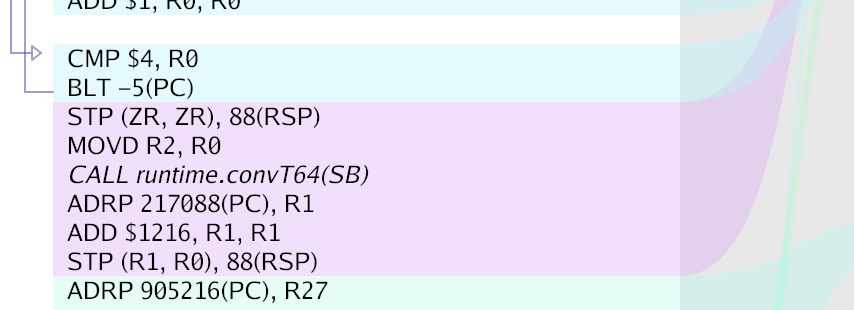
But why here? Turns out that calling fmt.Println(answer) causes interface boxing, which often makes the value escape and triggers a call to runtime.convT64. Check the implementation of
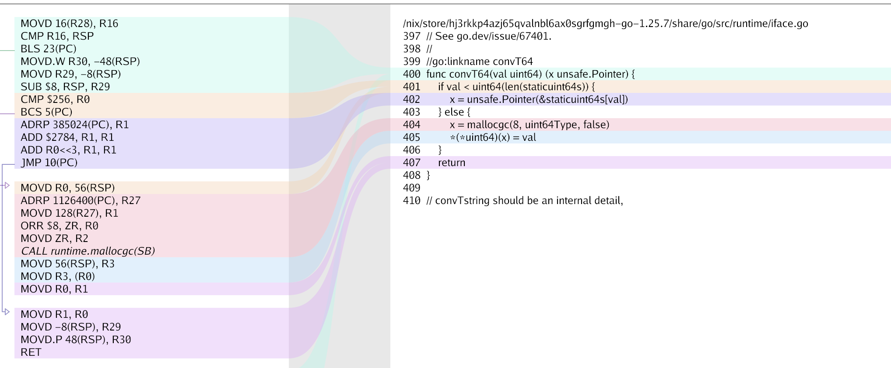
If you see the implementation of fmt.Println
// It returns the number of bytes written and any write error encountered. func Println(a ...any) (n int, err error) { return Fprintln(os.Stdout, a...) }
it takes in any and any is an interface, hence what we see here is interface boxing. To remove this, we would need to write to os.Stdout.WriteString and use the strconv package to convert, but that also has runtime.StringFormatInt which also has a call to runtime.panicSlice so let’s not go that way.
So the point here was we can see interface store at
STP (ZR, ZR), 88(RSP) // stp xzr, xzr, [sp,#88]
this at +16 as store for interface is value and its pointer. Hence the highest offset used in the frame is 88 + 16 => 104. The remaining 8 bytes (up to the 112-byte frame) account for alignment or other bookkeeping.
CPU profiling is measuring where your program spends CPU time. It records which functions and lines consume the most CPU cycles, so you know what to optimize.
Lets start profiling some code and see what we have. I have added the code for this section on github at Here
So here is our golang program
package main import ( "fmt" "strings" "time" ) func main() { start := time.Now() var result string result = calculateResult(100_100) fmt.Println("elapsed:", time.Since(start)) fmt.Println("length:", len(strings.Split(result, ","))) } func calculateResult(num int) string { var result string for i := range num { result += fmt.Sprintf("item-%d,", i) } return result }
Looks nice a normal program, but there are places this can we optimised. WHen running go build and ./cpu, we get about 2.7 seconds of time. Lets see this code. The first thing is to write good tests for your program so things dont go other ways.
❯ go run main.go elapsed: 2.649227084s length: 100101
So our initial runs show about 2.6 seconds of execution. Lets write some tests and check the issue then.
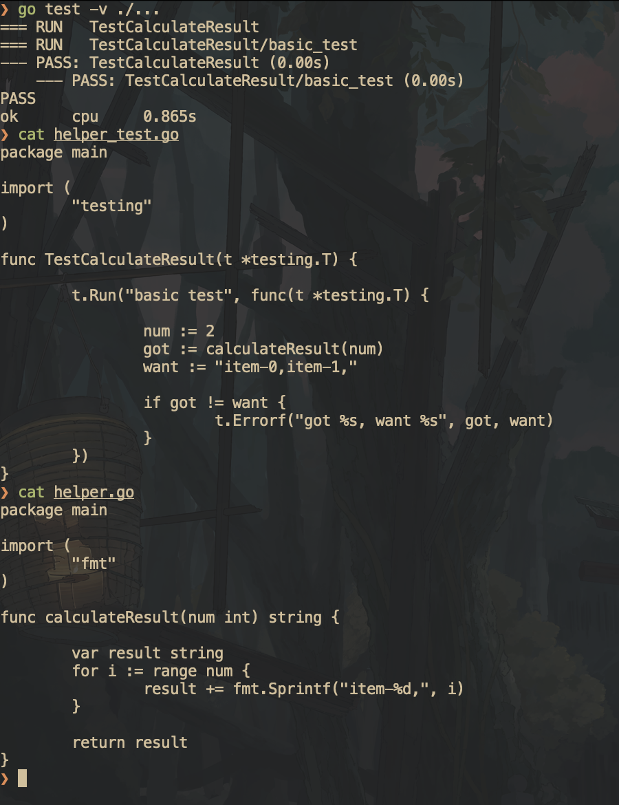
So our simple test runs fine, now lets write some benchmarks.
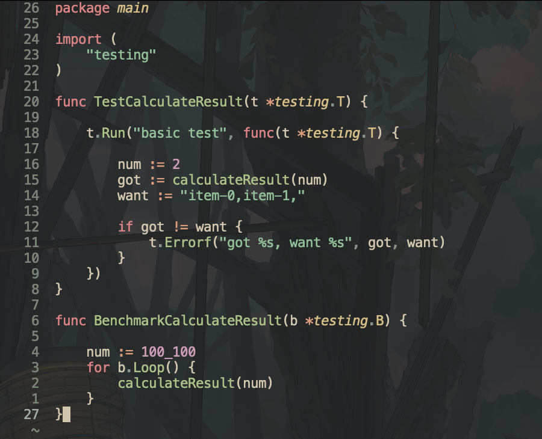
Lets run and check output.
go test -bench=. -benchmem -benchtime=3s -count=10 -cpuprofile=cpu.pprof -memprofile=mem.pprof > benchmark.txt
This is typically a good way to benchmark. Lets me explain
Now i typically save the out by > benchmark.<benchmark-name> so that i can use benchstat to compare it in future. Cool lets move further.
> benchmark.<benchmark-name>
This is the output of the benchmark.
goos: darwin goarch: arm64 pkg: cpu cpu: Apple M4 Pro BenchmarkCalculateResult-12 1 3519798417 ns/op 54486608696 B/op 356902 allocs/op BenchmarkCalculateResult-12 1 3329816625 ns/op 54483367368 B/op 351092 allocs/op BenchmarkCalculateResult-12 2 2517153625 ns/op 54464683360 B/op 329897 allocs/op BenchmarkCalculateResult-12 2 2544592792 ns/op 54463985504 B/op 329037 allocs/op BenchmarkCalculateResult-12 2 2523259521 ns/op 54463806728 B/op 328832 allocs/op BenchmarkCalculateResult-12 2 2553570208 ns/op 54463119100 B/op 327607 allocs/op BenchmarkCalculateResult-12 2 2545432750 ns/op 54464322420 B/op 329436 allocs/op BenchmarkCalculateResult-12 2 2546903666 ns/op 54463173380 B/op 327862 allocs/op BenchmarkCalculateResult-12 2 2533780854 ns/op 54464302596 B/op 330191 allocs/op BenchmarkCalculateResult-12 2 2533250021 ns/op 54464358280 B/op 329840 allocs/op PASS ok cpu 48.456s
Really bad stuff ngl. Lets see our cpu and mem profiling.
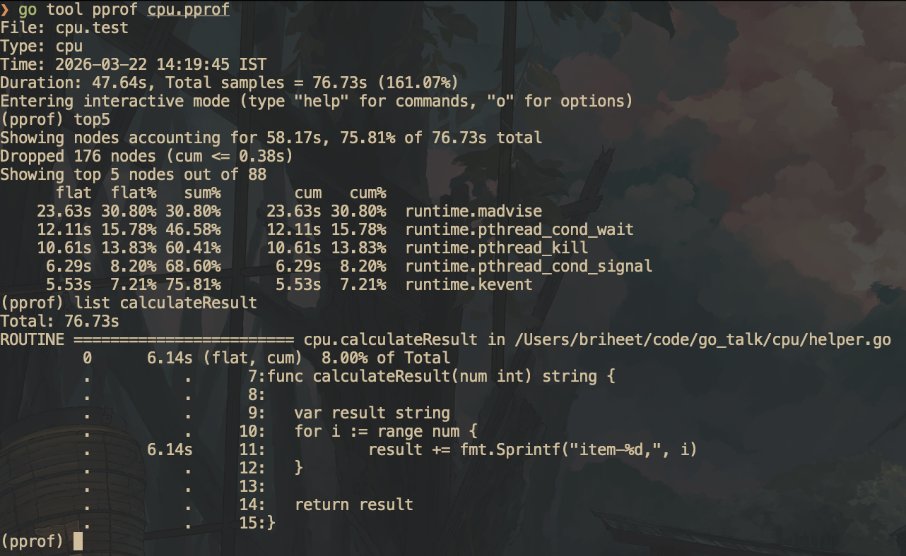
total: 76.73s ROUTINE ======================== fmt.Sprintf in /nix/store/hj3rkkp4azj65qvalnbl6ax0sgrfgmgh-go-1.25.7/share/go/src/fmt/print.go 0 170ms (flat, cum) 0.22% of Total . . 237:func Sprintf(format string, a ...any) string { . 130ms 238: p := newPrinter() . 20ms 239: p.doPrintf(format, a) . 10ms 240: s := string(p.buf) . 10ms 241: p.free() . . 242: return s . . 243:} . . 244: . . 245:// Appendf formats according to a format specifier, appends the result to the byte . . 246:// slice, and returns the updated slice.
Now what the duck is a newPrinter() ? Also i can see that 170ms out of 6 seconds tells me fmt.Sprintf is not the bottleneck, there is something fundamentally i am doing wrong. Lets see
(pprof) list newPrinter Total: 76.73s ROUTINE ======================== fmt.newPrinter in /nix/store/hj3rkkp4azj65qvalnbl6ax0sgrfgmgh-go-1.25.7/share/go/src/fmt/print.go 0 130ms (flat, cum) 0.17% of Total . . 151:func newPrinter() *pp { . 130ms 152: p := ppFree.Get().(*pp) . . 153: p.panicking = false . . 154: p.erroring = false . . 155: p.wrapErrs = false . . 156: p.fmt.init(&p.buf) . . 157: return p (pprof)
So actually profiler can hint me enough that neither me function has issues. The issue is on the result line i am not able to understand. You know what nig, let me fucking open up the assembly view. Also let me also post memprofile.
❯ go tool pprof mem.pprof File: cpu.test Type: alloc_space Time: 2026-03-22 14:20:33 IST Entering interactive mode (type "help" for commands, "o" for options) (pprof) list calculateResult Total: 912.98GB ROUTINE ======================== cpu.calculateResult in /Users/briheet/code/go_talk/cpu/helper.go 912.70GB 912.97GB (flat, cum) 100% of Total . . 7:func calculateResult(num int) string { . . 8: . . 9: var result string . . 10: for i := range num { 912.70GB 912.97GB 11: result += fmt.Sprintf("item-%d,", i) . . 12: } . . 13: . . 14: return result . . 15:} (pprof) list Sprintf Total: 912.98GB ROUTINE ======================== fmt.Sprintf in /nix/store/hj3rkkp4azj65qvalnbl6ax0sgrfgmgh-go-1.25.7/share/go/src/fmt/print.go 27.50MB 284.91MB (flat, cum) 0.03% of Total . . 237:func Sprintf(format string, a ...any) string { . 256.91MB 238: p := newPrinter() . 512.01kB 239: p.doPrintf(format, a) 27.50MB 27.50MB 240: s := string(p.buf) . . 241: p.free() . . 242: return s . . 243:} . . 244: . . 245:// Appendf formats according to a format specifier, appends the result to the byte
Woh thats a lot of allocation. The issue is on the line but i cant think of anything better. Lets see in assembly.
go build -gcflags='-m=2' -o asmcheck . # AS our function got inlined in main, we check main. You can also add //go:noinline this will make the function we are benchmarking not inline ~/go/bin/lensm -filter 'main.main' asmcheck
Now we see the real issue, We are doing 2 runtime calls. But how ? First one is doing boxing interface as we saw in above basic flow section. Second is we are doing string concatenation which happens as runtime.
So now we can hold of that concatenation does is that it picks up the previous string, and add the new string to it. If you read its code concatString, it takes in a temporary buffer, and a slice of the 2 strings we have sents and concats them whatever.
Hence now we have to find a better way to concat strings and remove this stuff. Lets google
Hence google says to use strings.Builder. Let me try and see.
package main import ( "fmt" "strings" ) func calculateResult(num int) string { var sb strings.Builder for i := range num { sb.WriteString(fmt.Sprintf("item-%d,", i)) } return sb.String() }
❯ go run . elapsed: 11.362125ms length: 100101
go test -v ./... === RUN TestCalculateResult === RUN TestCalculateResult/basic_test --- PASS: TestCalculateResult (0.00s) --- PASS: TestCalculateResult/basic_test (0.00s) PASS ok cpu 1.157s ❯ go test -bench=. -benchmem -benchtime=3s -count=10 -cpuprofile=cpu.pprof -memprofile=mem.pprof > benchmark1.txt ❯ hx benchmark1.txt ❯ benchstat benchmark.txt benchmark1.txt goos: darwin goarch: arm64 pkg: cpu cpu: Apple M4 Pro │ benchmark.txt │ benchmark1.txt │ │ sec/op │ sec/op vs base │ CalculateResult-12 2545.013m ± 31% 4.488m ± 2% -99.82% (p=0.000 n=10) │ benchmark.txt │ benchmark1.txt │ │ B/op │ B/op vs base │ CalculateResult-12 51941.216Mi ± 0% 7.293Mi ± 0% -99.99% (p=0.000 n=10) │ benchmark.txt │ benchmark1.txt │ │ allocs/op │ allocs/op vs base │ CalculateResult-12 329.6k ± 7% 200.0k ± 0% -39.33% (p=0.000 n=10)
We can see that strings.Builder eliminated the O(n²) copy-on-every-append, cutting time from 2.5s to 4.5ms and memory from 52GB to 7MB. Now lets us check profiling.
go tool pprof mem.pprof File: cpu.test Type: alloc_space Time: 2026-03-22 15:03:19 IST Entering interactive mode (type "help" for commands, "o" for options) (pprof) list calculateResult Total: 56.79GB ROUTINE ======================== cpu.calculateResult in /Users/briheet/code/go_talk/cpu/helper.go 5.94GB 56.79GB (flat, cum) 100% of Total . . 8:func calculateResult(num int) string { . . 9: . . 10: var sb strings.Builder . . 11: for i := range num { 5.94GB 56.79GB 12: sb.WriteString(fmt.Sprintf("item-%d,", i)) . . 13: } . . 14: . . 15: return sb.String() . . 16:} (pprof) exit ❯ go tool pprof cpu.pprof File: cpu.test Type: cpu Time: 2026-03-22 15:02:43 IST Duration: 35.99s, Total samples = 38.87s (108.01%) Entering interactive mode (type "help" for commands, "o" for options) (pprof) list calculateResult Total: 38.87s ROUTINE ======================== cpu.calculateResult in /Users/briheet/code/go_talk/cpu/helper.go 20ms 2.32s (flat, cum) 5.97% of Total . . 8:func calculateResult(num int) string { . . 9: . . 10: var sb strings.Builder . . 11: for i := range num { 20ms 2.32s 12: sb.WriteString(fmt.Sprintf("item-%d,", i)) . . 13: } . . 14: . . 15: return sb.String() . . 16:} (pprof)
Holy moly this is crazy. Pretty nice reduction as compared to above.
Cool, then let me get into my zone. I like only micro/nano stuff with zero allocs.
❯ go test -bench=. -benchmem -benchtime=3s -count=10 -cpuprofile=cpu.pprof -memprofile=mem.pprof > benchmark2.txt ❯ benchstat benchmark1.txt benchmark2.txt goos: darwin goarch: arm64 pkg: cpu cpu: Apple M4 Pro │ benchmark1.txt │ benchmark2.txt │ │ sec/op │ sec/op vs base │ CalculateResult-12 4.488m ± 2% 1.632m ± 3% -63.64% (p=0.000 n=10) │ benchmark1.txt │ benchmark2.txt │ │ B/op │ B/op vs base │ CalculateResult-12 7.293Mi ± 0% 5.494Mi ± 0% -24.66% (p=0.000 n=10) │ benchmark1.txt │ benchmark2.txt │ │ allocs/op │ allocs/op vs base │ CalculateResult-12 200.0k ± 0% 100.0k ± 0% -49.98% (p=0.000 n=10) ❯ go tool pprof cpu.pprof File: cpu.test Type: cpu Time: 2026-03-22 15:23:12 IST Duration: 35.90s, Total samples = 41.71s (116.20%) Entering interactive mode (type "help" for commands, "o" for options) (pprof) list calculateResult Total: 41.71s ROUTINE ======================== cpu.calculateResult in /Users/briheet/code/go_talk/cpu/helper.go 0 1.51s (flat, cum) 3.62% of Total . . 10:func calculateResult(num int) string { . . 11: . . 12: var sb strings.Builder . . 13: for i := range num { . 260ms 14: sb.Write(itemBytes) . 1.13s 15: sb.WriteString(strconv.Itoa(i)) . 120ms 16: sb.WriteByte(',') . . 17: } . . 18: . . 19: return sb.String() . . 20:} (pprof) exit ❯ go tool pprof mem.pprof File: cpu.test Type: alloc_space Time: 2026-03-22 15:23:48 IST Entering interactive mode (type "help" for commands, "o" for options) (pprof) list calculateResult Total: 116.77GB ROUTINE ======================== cpu.calculateResult in /Users/briheet/code/go_talk/cpu/helper.go 0 116.76GB (flat, cum) 100% of Total . . 10:func calculateResult(num int) string { . . 11: . . 12: var sb strings.Builder . . 13: for i := range num { . 32.56GB 14: sb.Write(itemBytes) . 84.21GB 15: sb.WriteString(strconv.Itoa(i)) . . 16: sb.WriteByte(',') . . 17: } . . 18: . . 19: return sb.String() . . 20:} (pprof)
This is even better than our first stuff. Essentailly, strings.Buidler has some methods for bytes and we already have some string as static in nature hence preallocate it and use it.
package main import ( "strconv" "strings" ) var itemBytes = []byte{0x69, 0x74, 0x65, 0x6d, 0x2d} func calculateResult(num int) string { var sb strings.Builder for i := range num { sb.Write(itemBytes) sb.WriteString(strconv.Itoa(i)) sb.WriteByte(',') } return sb.String() }
We can also do better. Lets see how
❯ go test -bench=. -benchmem -benchtime=3s -count=10 -cpuprofile=cpu.pprof -memprofile=mem.pprof > benchmark3.txt ❯ go test -v ./... === RUN TestCalculateResult === RUN TestCalculateResult/basic_test --- PASS: TestCalculateResult (0.00s) --- PASS: TestCalculateResult/basic_test (0.00s) PASS ok cpu (cached) ❯ benchstat benchmark2.txt benchmark3.txt goos: darwin goarch: arm64 pkg: cpu cpu: Apple M4 Pro │ benchmark2.txt │ benchmark3.txt │ │ sec/op │ sec/op vs base │ CalculateResult-12 1631.9µ ± 3% 827.2µ ± 1% -49.31% (p=0.000 n=10) │ benchmark2.txt │ benchmark3.txt │ │ B/op │ B/op vs base │ CalculateResult-12 5.494Mi ± 0% 1.048Mi ± 0% -80.93% (p=0.000 n=10) │ benchmark2.txt │ benchmark3.txt │ │ allocs/op │ allocs/op vs base │ CalculateResult-12 100033.000 ± 0% 1.000 ± 0% -100.00% (p=0.000 n=10) ❯ go tool pprof cpu.pprof File: cpu.test Type: cpu Time: 2026-03-22 16:23:04 IST Duration: 36.07s, Total samples = 35.37s (98.07%) Entering interactive mode (type "help" for commands, "o" for options) (pprof) list calculateResult Total: 35.37s ROUTINE ======================== cpu.calculateResult in /Users/briheet/code/go_talk/cpu/helper.go 440ms 2.91s (flat, cum) 8.23% of Total . . 20:func calculateResult(num int) string { . . 21: . . 22: bp := bufPool.Get().(*[]byte) . . 23: buf := (*bp)[:0] . . 24: . . 25: var intBuf [20]byte 40ms 40ms 26: for i := range num { 180ms 350ms 27: buf = append(buf, itemBytes...) 10ms 1.95s 28: b := strconv.AppendInt(intBuf[:0], int64(i), 10) 40ms 330ms 29: buf = append(buf, b...) 170ms 170ms 30: buf = append(buf, commaByte) . . 31: } . . 32: . 70ms 33: result := string(buf) . . 34: *bp = buf . . 35: bufPool.Put(bp) . . 36: return result . . 37:} (pprof) exit ❯ go tool pprof mem.pprof File: cpu.test Type: alloc_space Time: 2026-03-22 16:23:40 IST Entering interactive mode (type "help" for commands, "o" for options) (pprof) list calculateResult Total: 44.29GB ROUTINE ======================== cpu.calculateResult in /Users/briheet/code/go_talk/cpu/helper.go 44.24GB 44.29GB (flat, cum) 100% of Total . . 20:func calculateResult(num int) string { . . 21: . 26.99MB 22: bp := bufPool.Get().(*[]byte) . . 23: buf := (*bp)[:0] . . 24: . . 25: var intBuf [20]byte . . 26: for i := range num { . . 27: buf = append(buf, itemBytes...) . . 28: b := strconv.AppendInt(intBuf[:0], int64(i), 10) . . 29: buf = append(buf, b...) . . 30: buf = append(buf, commaByte) . . 31: } . . 32: 44.24GB 44.24GB 33: result := string(buf) . . 34: *bp = buf . 24.54MB 35: bufPool.Put(bp) . . 36: return result . . 37:} (pprof)
package main import ( "strconv" "sync" ) var ( itemBytes = []byte{0x69, 0x74, 0x65, 0x6d, 0x2d} commaByte = byte(0x2c) ) var bufPool = sync.Pool{ New: func() any { b := make([]byte, 0, 2*1024*1024) return &b }, } func calculateResult(num int) string { bp := bufPool.Get().(*[]byte) buf := (*bp)[:0] var intBuf [20]byte for i := range num { buf = append(buf, itemBytes...) b := strconv.AppendInt(intBuf[:0], int64(i), 10) buf = append(buf, b...) buf = append(buf, commaByte) } result := string(buf) *bp = buf bufPool.Put(bp) return result }
What the helly, how can you i do this. So essentailly we can use a bufferPool, get the buf, use it to dump items, ints, convert to string with string(buf) (a safe copy) and return the buf. I would say this is not a hot path hence this is a bit overkill but performance nerds looks for performance everwhere ;)
string(buf)
performance nerds looks for performance everwhere ;)
TODO: Please add simd stuff here.
So now lets compare with our baseline benchmarks how much we went better.
❯ benchstat benchmark.txt benchmark3.txt goos: darwin goarch: arm64 pkg: cpu cpu: Apple M4 Pro │ benchmark.txt │ benchmark3.txt │ │ sec/op │ sec/op vs base │ CalculateResult-12 2545012.8µ ± 31% 827.2µ ± 1% -99.97% (p=0.000 n=10) │ benchmark.txt │ benchmark3.txt │ │ B/op │ B/op vs base │ CalculateResult-12 54464312508.0 ± 0% 1.048Mi ± 0% -100.00% (p=0.000 n=10) │ benchmark.txt │ benchmark3.txt │ │ allocs/op │ allocs/op vs base │ CalculateResult-12 329638.000 ± 7% 1.000 ± 0% -100.00% (p=0.000 n=10)
So lets summarise how much better we went:
Pretty solid Sunday i guess. I hope my boss doesn’t removes me from job :sob. If this was C++, i would’ve fucked the whole problem to so nanoseconds but ig i am happy till this in go.
So yea, This is a way in which we can improve our cpu and memory stuff. Also working since a year at firms dealing in low latency, this is a ideal scenario. Also you do get paid a good amount to optimise stuff. So yea this was a whole section on Cpu and mem profiling, benchmarking, flags, benchstat, using assembly, etc.